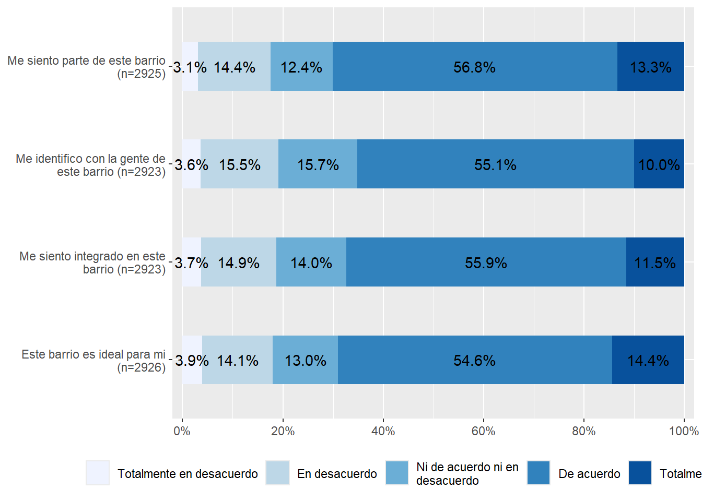
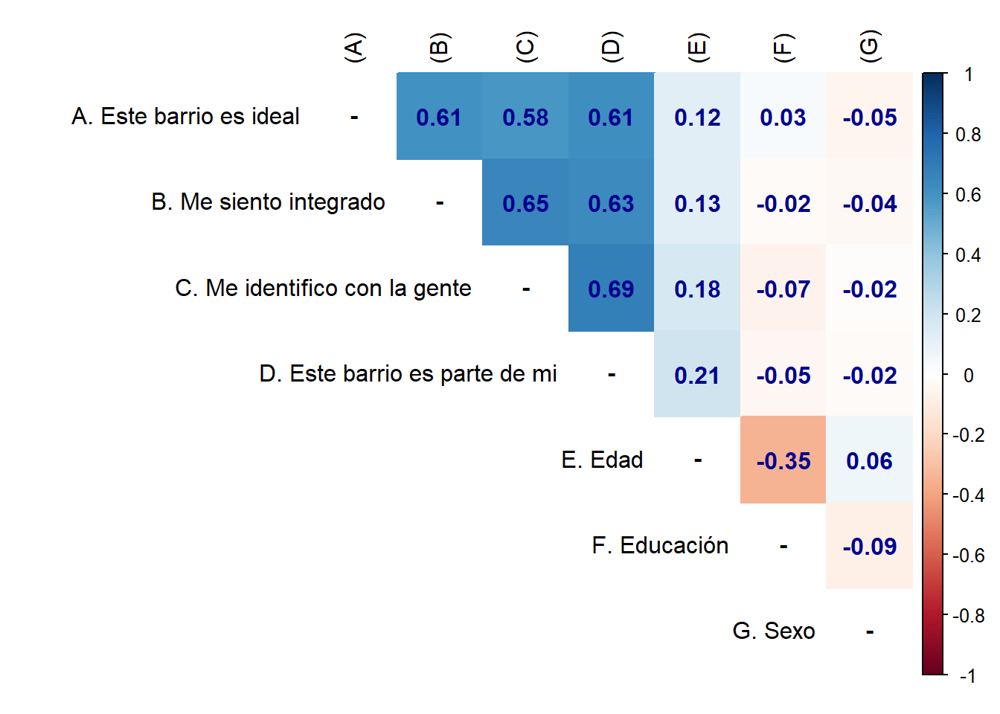
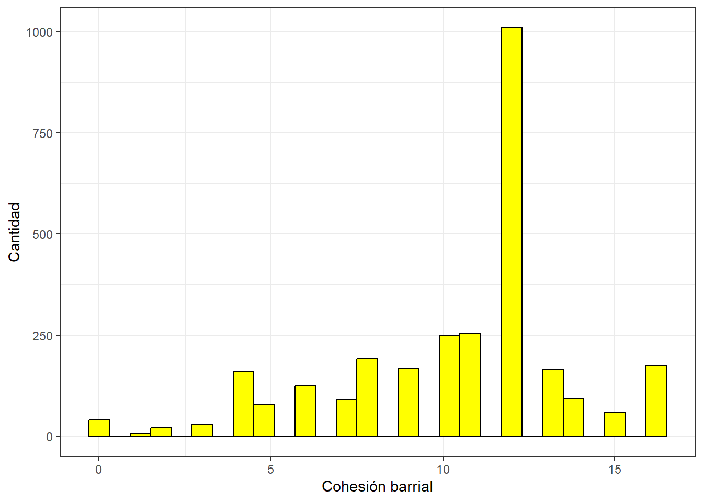
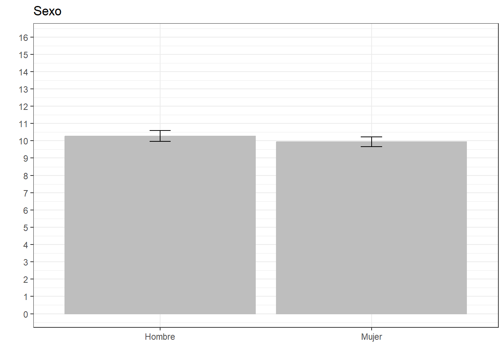
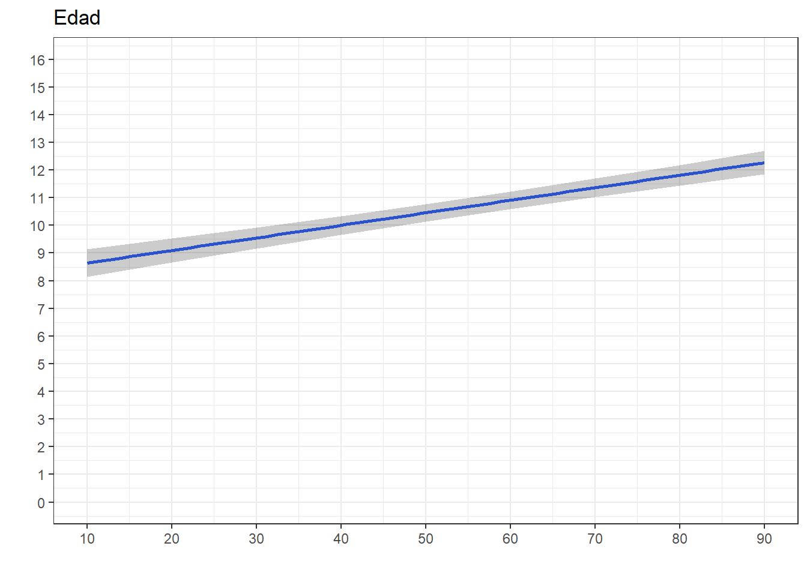
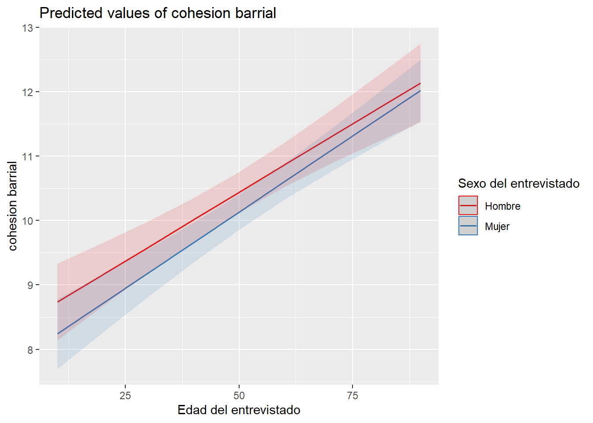

pacman::p_load(dplyr, car, sjmisc, haven, sjPlot, sjlabelled, stargazer, kableExtra, corrplot, texreg, ggplot2, ggpubr, psych)Práctico 06. Resumen de regresión lineal
Métodos estadísticos para Ciencias Sociales III
Presentación
Objetivo de la práctica
El desarrollo de esta guía tiene por objetivo revisar algunos procedimientos para la estimación de regresiones lineales y múltiples en R.
Análisis
1. Librerías principales (de R) a utilizar en el análisis
desde internet:
#cargamos la base de datos desde internet
load(url("https://dataverse.harvard.edu/api/access/datafile/7245118")) #Cargar base de datosSelección de variables
Este paso consiste en crear un subset reducido de datos que contenga solo las variables de interés. Para ello lo más fácil es revisar el libro de códigos de cada base de datos. Además filtramos por la ola 1 para trabajar solo con datos del 2016.
proc_data <- elsoc_long_2016_2022.2 %>% filter(ola=="1") %>%
select(t02_01, # Este barrio es ideal para mi
t02_02, # Me siento incluido en este barrio
t02_03, # Me identifico con la gente de este barrio
t02_04, # Este barrio es parte de mi
m01,# nivel educacional
m0_sexo,# sexo
m0_edad# edad
)
# Comprobar
names(proc_data)[1] "t02_01" "t02_02" "t02_03" "t02_04" "m01" "m0_sexo" "m0_edad"Mediante el comando get_label obtenemos el atributo label de las variables.
sjlabelled::get_label(proc_data) t02_01
"Grado de acuerdo: Este es el barrio ideal para mi"
t02_02
"Grado de acuerdo: Me siento integrado/a en este barrio"
t02_03
"Grado de acuerdo: Me identifico con la gente de este barrio"
t02_04
"Grado de acuerdo: Este barrio es parte de mi"
m01
"Nivel educacional"
m0_sexo
"Sexo del entrevistado"
m0_edad
"Edad del entrevistado" Podemos ver que son largas o con códigos poco informativos, por lo tanto, es necesario cambiarlas por etiquetas más cortas y de fácil identificación.
Procesamiento de variables
Para el procesamiento de cada variable se seguirá el siguiente flujo de trabajo:
- Descriptivo general
- Recodificación: de casos perdidos y otros valores (en caso necesario)
- Etiquetado: cambio de nombres de variables y valores (en caso necesario)
- Otros ajustes
Y se recomienda también un descriptivo final para revisar que el procesamiento de cada variable está ok.
cohesión barrial
a. Descriptivo
Para los descriptivos se utilizará la función frq, de la librería sjmisc:
frq(proc_data$t02_01)Grado de acuerdo: Este es el barrio ideal para mi (x) <numeric>
# total N=2927 valid N=2927 mean=3.31 sd=16.51
Value | Label | N | Raw % | Valid % | Cum. %
-------------------------------------------------------------------------------
-999 | No Responde | 0 | 0.00 | 0.00 | 0.00
-888 | No Sabe | 1 | 0.03 | 0.03 | 0.03
-777 | Valor perdido por error tecnico | 0 | 0.00 | 0.00 | 0.03
-666 | Valor perdido por encuesta incompleta | 0 | 0.00 | 0.00 | 0.03
1 | Totalmente en desacuerdo | 114 | 3.89 | 3.89 | 3.93
2 | En desacuerdo | 413 | 14.11 | 14.11 | 18.04
3 | Ni de acuerdo ni en desacuerdo | 379 | 12.95 | 12.95 | 30.99
4 | De acuerdo | 1599 | 54.63 | 54.63 | 85.62
5 | Totalmente de acuerdo | 421 | 14.38 | 14.38 | 100.00
<NA> | <NA> | 0 | 0.00 | <NA> | <NA>En esta variable vemos valores asociados a la opción “No contesta” (-999) y “No sabe” (-888), (-777) y (-666) que corresponde definirlos como casos perdidos (en el caso de R, como casos NA). El resto de los valores y etiquetas se encuentran en un orden correcto. Sin embargo, si queremos construir una escala, lo mejor es dejar los valores de 0 a 4
b. Recodificación
Después de revisar el libro de códigos, no hay variables en que los valores negativos representen alguna otra característica, así que podemos usar set_na
proc_data <- proc_data %>% set_na(., na = c(-999, -888, -777, -666))frq(proc_data$t02_01)Grado de acuerdo: Este es el barrio ideal para mi (x) <numeric>
# total N=2927 valid N=2926 mean=3.62 sd=1.02
Value | Label | N | Raw % | Valid % | Cum. %
------------------------------------------------------------------------
1 | Totalmente en desacuerdo | 114 | 3.89 | 3.90 | 3.90
2 | En desacuerdo | 413 | 14.11 | 14.11 | 18.01
3 | Ni de acuerdo ni en desacuerdo | 379 | 12.95 | 12.95 | 30.96
4 | De acuerdo | 1599 | 54.63 | 54.65 | 85.61
5 | Totalmente de acuerdo | 421 | 14.38 | 14.39 | 100.00
<NA> | <NA> | 1 | 0.03 | <NA> | <NA>Para reordenar las categorías volvemos a utilizar la función recode, de la librería car
proc_data$t02_01 <- recode(proc_data$t02_01, "1=0; 2=1; 3=2; 4=3; 5=4")
proc_data$t02_02 <- recode(proc_data$t02_02, "1=0; 2=1; 3=2; 4=3; 5=4")
proc_data$t02_03 <- recode(proc_data$t02_03, "1=0; 2=1; 3=2; 4=3; 5=4")
proc_data$t02_04 <- recode(proc_data$t02_04, "1=0; 2=1; 3=2; 4=3; 5=4")c - Etiquetado
Vamos a dar un nombre más sustantivo a las variables con la función rename, de la librería dplyr:
proc_data <- proc_data %>% rename("ideal"=t02_01,
"integracion"=t02_02,
"identificacion"=t02_03,
"pertenencia"=t02_04)Además de cambiar el nombre, queremos cambiar las etiquetas de las variables.
proc_data$ideal <- set_label(x = proc_data$ideal,label = "Este barrio es ideal para mi")
get_label(proc_data$ideal)[1] "Este barrio es ideal para mi"proc_data$integracion <- set_label(x = proc_data$integracion, label = "Me siento integrado en este barrio")
get_label(proc_data$integracion)[1] "Me siento integrado en este barrio"proc_data$identificacion <- set_label(x = proc_data$identificacion, label = "Me identifico con la gente de este barrio")
get_label(proc_data$identificacion)[1] "Me identifico con la gente de este barrio"proc_data$pertenencia <- set_label(x = proc_data$pertenencia, label = "Me siento parte de este barrio")
get_label(proc_data$pertenencia)[1] "Me siento parte de este barrio"Revisión final
Nuevamente un descriptivo de cada variable para confirmar que el procesamiento está ok:
frq(proc_data$ideal)Este barrio es ideal para mi (x) <numeric>
# total N=2927 valid N=2926 mean=2.62 sd=1.02
Value | Label | N | Raw % | Valid % | Cum. %
------------------------------------------------------------------------
0 | 0 | 114 | 3.89 | 3.90 | 3.90
1 | Totalmente en desacuerdo | 413 | 14.11 | 14.11 | 18.01
2 | En desacuerdo | 379 | 12.95 | 12.95 | 30.96
3 | Ni de acuerdo ni en desacuerdo | 1599 | 54.63 | 54.65 | 85.61
4 | De acuerdo | 421 | 14.38 | 14.39 | 100.00
5 | Totalmente de acuerdo | 0 | 0.00 | 0.00 | 100.00
<NA> | <NA> | 1 | 0.03 | <NA> | <NA>frq(proc_data$integracion)Me siento integrado en este barrio (x) <numeric>
# total N=2927 valid N=2923 mean=2.57 sd=1.00
Value | Label | N | Raw % | Valid % | Cum. %
------------------------------------------------------------------------
0 | 0 | 109 | 3.72 | 3.73 | 3.73
1 | Totalmente en desacuerdo | 436 | 14.90 | 14.92 | 18.65
2 | En desacuerdo | 408 | 13.94 | 13.96 | 32.60
3 | Ni de acuerdo ni en desacuerdo | 1633 | 55.79 | 55.87 | 88.47
4 | De acuerdo | 337 | 11.51 | 11.53 | 100.00
5 | Totalmente de acuerdo | 0 | 0.00 | 0.00 | 100.00
<NA> | <NA> | 4 | 0.14 | <NA> | <NA>frq(proc_data$identificacion)Me identifico con la gente de este barrio (x) <numeric>
# total N=2927 valid N=2923 mean=2.52 sd=0.99
Value | Label | N | Raw % | Valid % | Cum. %
------------------------------------------------------------------------
0 | 0 | 106 | 3.62 | 3.63 | 3.63
1 | Totalmente en desacuerdo | 453 | 15.48 | 15.50 | 19.12
2 | En desacuerdo | 460 | 15.72 | 15.74 | 34.86
3 | Ni de acuerdo ni en desacuerdo | 1612 | 55.07 | 55.15 | 90.01
4 | De acuerdo | 292 | 9.98 | 9.99 | 100.00
5 | Totalmente de acuerdo | 0 | 0.00 | 0.00 | 100.00
<NA> | <NA> | 4 | 0.14 | <NA> | <NA>frq(proc_data$pertenencia)Me siento parte de este barrio (x) <numeric>
# total N=2927 valid N=2925 mean=2.63 sd=0.99
Value | Label | N | Raw % | Valid % | Cum. %
------------------------------------------------------------------------
0 | 0 | 91 | 3.11 | 3.11 | 3.11
1 | Totalmente en desacuerdo | 422 | 14.42 | 14.43 | 17.54
2 | En desacuerdo | 362 | 12.37 | 12.38 | 29.91
3 | Ni de acuerdo ni en desacuerdo | 1660 | 56.71 | 56.75 | 86.67
4 | De acuerdo | 390 | 13.32 | 13.33 | 100.00
5 | Totalmente de acuerdo | 0 | 0.00 | 0.00 | 100.00
<NA> | <NA> | 2 | 0.07 | <NA> | <NA>Vemos que los valores (labels) de cada categoría de las variables que recodificamos no se corresponden con el nuevo valor. Para re-etiquetar valores usamos la función set_labels, de la librería sjlabelled
proc_data$ideal <- set_labels(proc_data$ideal,
labels=c( "Totalmente en desacuerdo"=0,
"En desacuerdo"=1,
"Ni de acuerdo ni en desacuerdo"=2,
"De acuerdo"=3,
"Totalmente de acuerdo"=4))
proc_data$integracion <- set_labels(proc_data$integracion,
labels=c( "Totalmente en desacuerdo"=0,
"En desacuerdo"=1,
"Ni de acuerdo ni en desacuerdo"=2,
"De acuerdo"=3,
"Totalmente de acuerdo"=4))
proc_data$identificacion <- set_labels(proc_data$identificacion,
labels=c( "Totalmente en desacuerdo"=0,
"En desacuerdo"=1,
"Ni de acuerdo ni en desacuerdo"=2,
"De acuerdo"=3,
"Totalmente de acuerdo"=4))
proc_data$pertenencia <- set_labels(proc_data$pertenencia,
labels=c( "Totalmente en desacuerdo"=0,
"En desacuerdo"=1,
"Ni de acuerdo ni en desacuerdo"=2,
"De acuerdo"=3,
"Totalmente de acuerdo"=4))y volvemos a revisar
frq(proc_data$ideal)Este barrio es ideal para mi (x) <numeric>
# total N=2927 valid N=2926 mean=2.62 sd=1.02
Value | Label | N | Raw % | Valid % | Cum. %
------------------------------------------------------------------------
0 | Totalmente en desacuerdo | 114 | 3.89 | 3.90 | 3.90
1 | En desacuerdo | 413 | 14.11 | 14.11 | 18.01
2 | Ni de acuerdo ni en desacuerdo | 379 | 12.95 | 12.95 | 30.96
3 | De acuerdo | 1599 | 54.63 | 54.65 | 85.61
4 | Totalmente de acuerdo | 421 | 14.38 | 14.39 | 100.00
<NA> | <NA> | 1 | 0.03 | <NA> | <NA>frq(proc_data$pertenencia)Me siento parte de este barrio (x) <numeric>
# total N=2927 valid N=2925 mean=2.63 sd=0.99
Value | Label | N | Raw % | Valid % | Cum. %
------------------------------------------------------------------------
0 | Totalmente en desacuerdo | 91 | 3.11 | 3.11 | 3.11
1 | En desacuerdo | 422 | 14.42 | 14.43 | 17.54
2 | Ni de acuerdo ni en desacuerdo | 362 | 12.37 | 12.38 | 29.91
3 | De acuerdo | 1660 | 56.71 | 56.75 | 86.67
4 | Totalmente de acuerdo | 390 | 13.32 | 13.33 | 100.00
<NA> | <NA> | 2 | 0.07 | <NA> | <NA>4.2. Educación
- [
m01] = Nivel de estudios alcanzado - Entrevistado
a. Descriptivo
frq(proc_data$m01)Nivel educacional (x) <numeric>
# total N=2927 valid N=2925 mean=5.26 sd=2.20
Value | Label | N | Raw % | Valid % | Cum. %
------------------------------------------------------------------------------------
1 | Sin estudios | 37 | 1.26 | 1.26 | 1.26
2 | Educacion Basica o Preparatoria incompleta | 322 | 11.00 | 11.01 | 12.27
3 | Educacion Basica o Preparatoria completa | 297 | 10.15 | 10.15 | 22.43
4 | Educacion Media o Humanidades incompleta | 394 | 13.46 | 13.47 | 35.90
5 | Educacion Media o Humanidades completa | 857 | 29.28 | 29.30 | 65.20
6 | Tecnica Superior incompleta | 102 | 3.48 | 3.49 | 68.68
7 | Tecnica Superior completa | 381 | 13.02 | 13.03 | 81.71
8 | Universitaria incompleta | 186 | 6.35 | 6.36 | 88.07
9 | Universitaria completa | 303 | 10.35 | 10.36 | 98.43
10 | Estudios de posgrado (magister o doctorado) | 46 | 1.57 | 1.57 | 100.00
<NA> | <NA> | 2 | 0.07 | <NA> | <NA>Esta vez la vamos a dejar así
4.3. Sexo
- [
m0_sexo] = SEXO Sexo
a. Descriptivo
frq(proc_data$m0_sexo)Sexo del entrevistado (x) <numeric>
# total N=2927 valid N=2927 mean=1.60 sd=0.49
Value | Label | N | Raw % | Valid % | Cum. %
------------------------------------------------
1 | Hombre | 1163 | 39.73 | 39.73 | 39.73
2 | Mujer | 1764 | 60.27 | 60.27 | 100.00
<NA> | <NA> | 0 | 0.00 | <NA> | <NA>4.4 Edad
- [
m0_edad] = EDAD Edad.
a. Descriptivo
summary(proc_data$m0_edad) Min. 1st Qu. Median Mean 3rd Qu. Max.
18.00 33.00 46.00 46.09 58.00 88.00 Análisis
Una vez que tenemos recodificadas nuestras variables en el archivo de preparación y logramos exportar la base de datos procesada en la carpeta input/data, abrimos un documento de quarto (.qmd) para realizar el análisis.
Al trabajar con quarto (y al intentar renderizar), el documento leerá todos lo que esté escrito en el documento desde 0, por lo que es necesario siempre cargar de nuevo los paquetes y bases de datos.
Análisis descriptivo
sjmisc::descr(proc_data,
show = c("label","range", "mean", "sd", "NA.prc", "n"))%>% # Selecciona estadísticos
kable(.,"markdown") # Esto es para que se vea bien en quarto| var | label | n | NA.prc | mean | sd | range | |
|---|---|---|---|---|---|---|---|
| 1 | ideal | Este barrio es ideal para mi | 2926 | 0.0341647 | 2.615174 | 1.0202541 | 4 (0-4) |
| 3 | integracion | Me siento integrado en este barrio | 2923 | 0.1366587 | 2.565515 | 0.9993502 | 4 (0-4) |
| 2 | identificacion | Me identifico con la gente de este barrio | 2923 | 0.1366587 | 2.523777 | 0.9884856 | 4 (0-4) |
| 7 | pertenencia | Me siento parte de este barrio | 2925 | 0.0683293 | 2.627692 | 0.9878809 | 4 (0-4) |
| 4 | m01 | Nivel educacional | 2925 | 0.0683293 | 5.260513 | 2.2015019 | 9 (1-10) |
| 6 | m0_sexo | Sexo del entrevistado | 2927 | 0.0000000 | 1.602665 | 0.4894300 | 1 (1-2) |
| 5 | m0_edad | Edad del entrevistado | 2927 | 0.0000000 | 46.090878 | 15.2867983 | 70 (18-88) |
En la Tabla 1 podemos observar los descriptivos generales de la base de datos procesada que utilizamos en el práctico anterior. Contiene ya creado el índice de cohesión barrial cuya media es de 10,33
Y si queremos visualizar algo más:
proc_data %>% dplyr::select(ideal, integracion, identificacion, pertenencia) %>%
sjPlot::plot_stackfrq()+
theme(legend.position = "bottom")
En la Figura 1 podemos ver la distribución de las variables de cohesión barrial, donde se puede observar que más del 65% de la muestra está de acuerdo o totalmente de acuerdo con las afirmaciones indicadas.
Asociación de variables
Seleccionamos las principales variables y cambiamos su nombre. No seleccionaremos las variables originales que construyeron el índice.
proc_data <- proc_data %>% select(ideal, integracion, identificacion, pertenencia, edad=m0_edad, educacion=m01, sexo=m0_sexo)Podemos ver la asociación de todas las variables, como lo muestra la ?@cor-complete
M <- cor(proc_data, use = "complete.obs") # Usar solo casos con observaciones completas
diag(M) = NA # Elimina la diagonal (correlaciones absolutas de cada variable consigmo misma)
rownames(M) <- c("A. Este barrio es ideal",
"B. Me siento integrado",
"C. Me identifico con la gente",
"D. Este barrio es parte de mi",
"E. Edad",
"F. Educación",
"G. Sexo")
colnames(M) <-c("(A)", "(B)","(C)", "(D)", "(E)", "(F)", "(G)")corrplot::corrplot(M,
method = "color", # Cambia los círculos por color completo de cada cuadrante
addCoef.col = "#000390", # Color de los coeficientes
type = "upper", # Deja solo las correlaciones de arriba
tl.col = "black", # COlor letras, rojo por defecto
na.label = "-")
Construcción de escala
psych::alpha(dplyr::select(proc_data, ideal, integracion, identificacion, pertenencia))
Reliability analysis
Call: psych::alpha(x = dplyr::select(proc_data, ideal, integracion,
identificacion, pertenencia))
raw_alpha std.alpha G6(smc) average_r S/N ase mean sd median_r
0.87 0.87 0.84 0.63 6.8 0.0039 2.6 0.85 0.62
95% confidence boundaries
lower alpha upper
Feldt 0.86 0.87 0.88
Duhachek 0.86 0.87 0.88
Reliability if an item is dropped:
raw_alpha std.alpha G6(smc) average_r S/N alpha se var.r med.r
ideal 0.85 0.85 0.80 0.66 5.8 0.0047 0.00086 0.65
integracion 0.84 0.84 0.78 0.63 5.1 0.0053 0.00299 0.61
identificacion 0.83 0.83 0.76 0.62 4.9 0.0055 0.00015 0.61
pertenencia 0.83 0.83 0.76 0.62 4.8 0.0055 0.00121 0.61
Item statistics
n raw.r std.r r.cor r.drop mean sd
ideal 2926 0.83 0.83 0.73 0.69 2.6 1.02
integracion 2923 0.85 0.85 0.78 0.73 2.6 1.00
identificacion 2923 0.86 0.86 0.80 0.74 2.5 0.99
pertenencia 2925 0.86 0.86 0.80 0.75 2.6 0.99
Non missing response frequency for each item
0 1 2 3 4 miss
ideal 0.04 0.14 0.13 0.55 0.14 0
integracion 0.04 0.15 0.14 0.56 0.12 0
identificacion 0.04 0.15 0.16 0.55 0.10 0
pertenencia 0.03 0.14 0.12 0.57 0.13 0La consistencia interna de una posible escala entre estos cuatro ítems es de 0.87, lo que representa una alta consistencia interna. Si quitaramos alguno de estos ítems la consistencia interna solo bajaría, así que podemos construir una escala con los cuatro ítems.
proc_data <- proc_data %>%
rowwise() %>%
mutate(cohesion_barrial = sum(ideal, integracion, identificacion, pertenencia))
summary(proc_data$cohesion_barrial) Min. 1st Qu. Median Mean 3rd Qu. Max. NA's
0.00 8.00 12.00 10.33 12.00 16.00 10 y la podemos visualizar en un gráfico:
ggplot(proc_data, aes(x = cohesion_barrial)) +
geom_histogram(binwidth=0.6, colour="black", fill="yellow") +
theme_bw() +
xlab("Cohesión barrial") +
ylab("Cantidad")Warning: Removed 10 rows containing non-finite outside the scale range
(`stat_bin()`).
La Figura 2 muestra la distribución de la nueva escala de Cohesión Barrial que construimos. En general, la mayor concentración de casos está en la categoría 12 y que sumado a un promedio de 10.33 según los descriptivos anteriores, podríamos afirmar que la cohesión barrial en Chile es alta.
Regresión lineal
Para facilitar la interpretación de los coeficientes de regresión vamos a recodificar la variable de educación (10 categorías) en tres categorías (básica, media y universitaria).
Además, nos aseguramos que las variables categóricas estén como variables categóricas con as_factor. De esta forma nos aseguramos que la estimación de los modelos sea correcta ya que no se úede interpretar educación como si fuera una variable numérica.
proc_data$educacion <- car::recode(proc_data$educacion, "c(1,2,3)=1; c(4,5)=2; c(6,7,8,9,10)=3")
proc_data$educacion <- set_labels(proc_data$educacion,
labels=c( "Educacion básica"=1,
"Educación media"=2,
"Educación superior"=3))
frq(proc_data$educacion)Nivel educacional (x) <numeric>
# total N=2927 valid N=2925 mean=2.12 sd=0.75
Value | Label | N | Raw % | Valid % | Cum. %
------------------------------------------------------------
1 | Educacion básica | 656 | 22.41 | 22.43 | 22.43
2 | Educación media | 1251 | 42.74 | 42.77 | 65.20
3 | Educación superior | 1018 | 34.78 | 34.80 | 100.00
<NA> | <NA> | 2 | 0.07 | <NA> | <NA>proc_data$educacion_rec <- as_factor(proc_data$educacion)
proc_data$sexo_rec <- as_factor(proc_data$sexo)
proc_data <- na.omit(proc_data)
reg1 <- lm(cohesion_barrial ~ 1, data=proc_data)
stargazer(reg1, type="text")
===============================================
Dependent variable:
---------------------------
cohesion_barrial
-----------------------------------------------
Constant 10.336***
(0.063)
-----------------------------------------------
Observations 2,915
R2 0.000
Adjusted R2 0.000
Residual Std. Error 3.397 (df = 2914)
===============================================
Note: *p<0.1; **p<0.05; ***p<0.01¿Qué valor toma una regresión lineal cuando no incluímos predictores en nuestro modelo?
En este caso, lo que nos interesa observar es el intercepto. Un intercepto de 10.336 nos indica la media de la cohesión barrial.
Ejercicio
1- Estima un modelo de regresión lineal simple para cada variable independiente (edad, educación, sexo). Luego estima un modelo de regresión lineal múltiple que incluya las tres variables independientes. Representalo en una tabla de regresión e interpreta los resultados de cada modelo.
reg1 <- lm(cohesion_barrial ~ edad, data=proc_data)
reg2 <- lm(cohesion_barrial ~ educacion_rec, data=proc_data)
reg3 <- lm(cohesion_barrial ~ sexo_rec, data=proc_data)
reg4 <- lm(cohesion_barrial ~ edad + educacion_rec + sexo_rec, data=proc_data)
tab_model(reg1, reg2, reg3, reg4, show.ci=FALSE)| cohesion barrial | cohesion barrial | cohesion barrial | cohesion barrial | |||||
| Predictors | Estimates | p | Estimates | p | Estimates | p | Estimates | p |
| (Intercept) | 8.42 | <0.001 | 10.51 | <0.001 | 10.49 | <0.001 | 8.19 | <0.001 |
| Edad del entrevistado | 0.04 | <0.001 | 0.05 | <0.001 | ||||
| Nivel educacional: Educación media |
-0.13 | 0.414 | 0.33 | 0.051 | ||||
| Nivel educacional: Educación superior |
-0.35 | 0.041 | 0.33 | 0.067 | ||||
| Sexo del entrevistado: Mujer |
-0.26 | 0.041 | -0.33 | 0.010 | ||||
| Observations | 2915 | 2915 | 2915 | 2915 | ||||
| R2 / R2 adjusted | 0.035 / 0.034 | 0.002 / 0.001 | 0.001 / 0.001 | 0.039 / 0.037 | ||||
- Estima un modelo de regresión con variables estandarizadas y compáralo con el modelo de regresión lineal múltiple (¿qué diferencias hay entre los valores de los coeficientes de un modelo y otro?)
data <- dplyr::select(proc_data, cohesion_barrial, educacion, edad, sexo)
data_std = data.frame(scale(data))
reg_std <- lm(cohesion_barrial ~ edad + educacion + sexo, data=data_std)
tab_model(reg4, reg_std, show.ci=FALSE)| cohesion barrial | cohesion barrial | |||
| Predictors | Estimates | p | Estimates | p |
| (Intercept) | 8.19 | <0.001 | -0.00 | 1.000 |
| Edad del entrevistado | 0.05 | <0.001 | 0.20 | <0.001 |
| educacion: Nivel educacional: Educación media |
0.33 | 0.051 | ||
| educacion: Nivel educacional: Educación superior |
0.33 | 0.067 | ||
| sexo: Sexo del entrevistado: Mujer |
-0.33 | 0.010 | ||
| educacion | 0.03 | 0.101 | ||
| sexo | -0.05 | 0.009 | ||
| Observations | 2915 | 2915 | ||
| R2 / R2 adjusted | 0.039 / 0.037 | 0.038 / 0.037 | ||
- Gráfica los valores predichos de los coeficientes estadísticamente significativos.
library(ggeffects)
ggeffects::ggpredict(reg4, terms = c("sexo_rec")) %>%
ggplot(aes(x=x, y=predicted)) +
geom_bar(stat="identity", color="grey", fill="grey")+
geom_errorbar(aes(ymin = conf.low, ymax = conf.high), width=.1) +
labs(title="Sexo", x = "", y = "") +
theme_bw() +
scale_x_discrete(name = "",
breaks = c(1,2),
labels = c("Hombre", "Mujer"))+
scale_y_continuous(limits = c(0,16),
breaks = seq(0,16, by = 1))
ggeffects::ggpredict(reg4, terms="edad") %>%
ggplot(mapping=aes(x = x, y=predicted)) +
labs(title="Edad", x = "", y = "")+
theme_bw() +
geom_smooth()+
geom_ribbon(aes(ymin = conf.low, ymax = conf.high), alpha = .2, fill = "black") +
scale_x_continuous(breaks = seq(0,100, by = 10))+
scale_y_continuous(limits = c(0,16),
breaks = seq(0,16, by = 1))`geom_smooth()` using method = 'loess' and formula = 'y ~ x'
- Estima una interacción entre dos variables independientes. Gráfica e interpreta el resultado.
reg_int <- lm(cohesion_barrial ~ edad * sexo_rec + educacion_rec, data=proc_data)plot_model(reg_int, type="int")